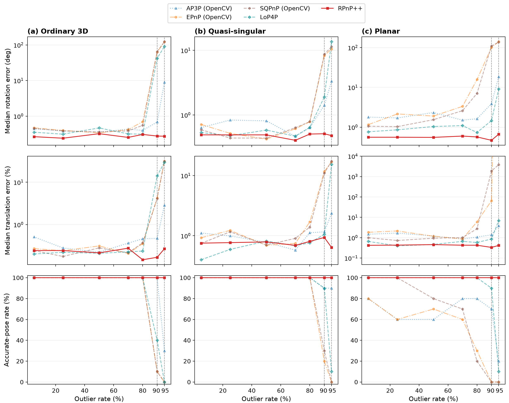
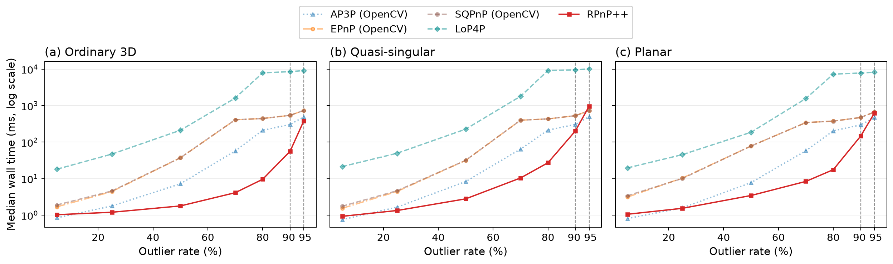
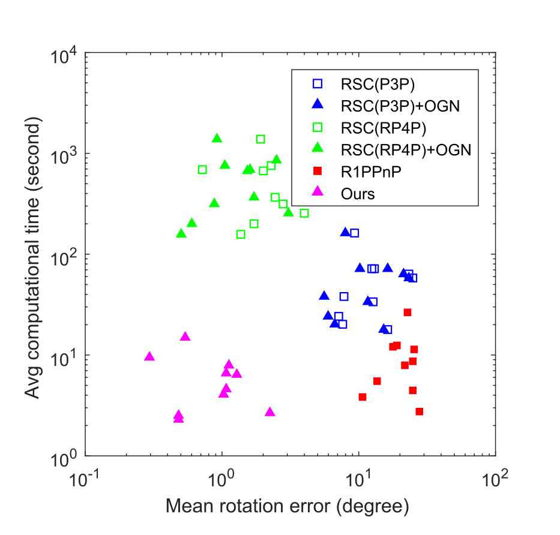
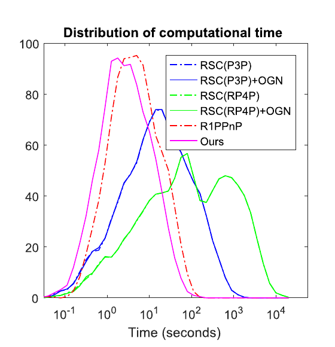
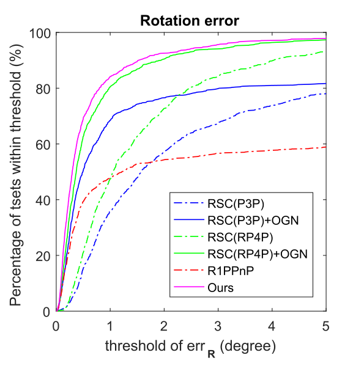
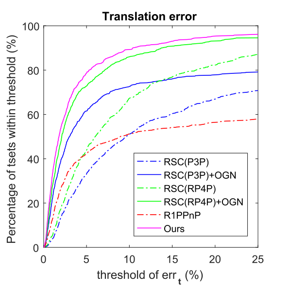
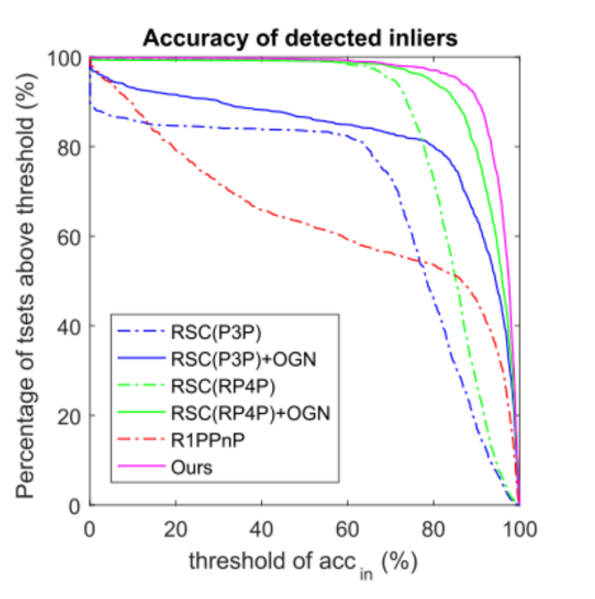
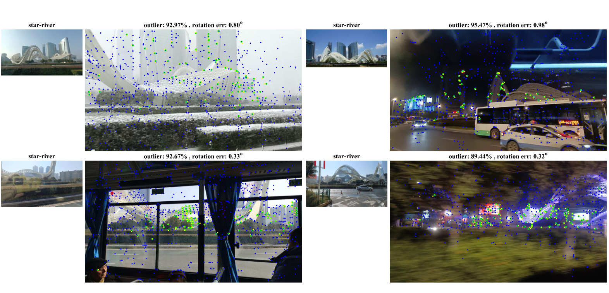
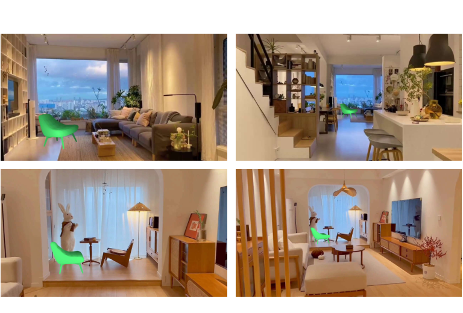
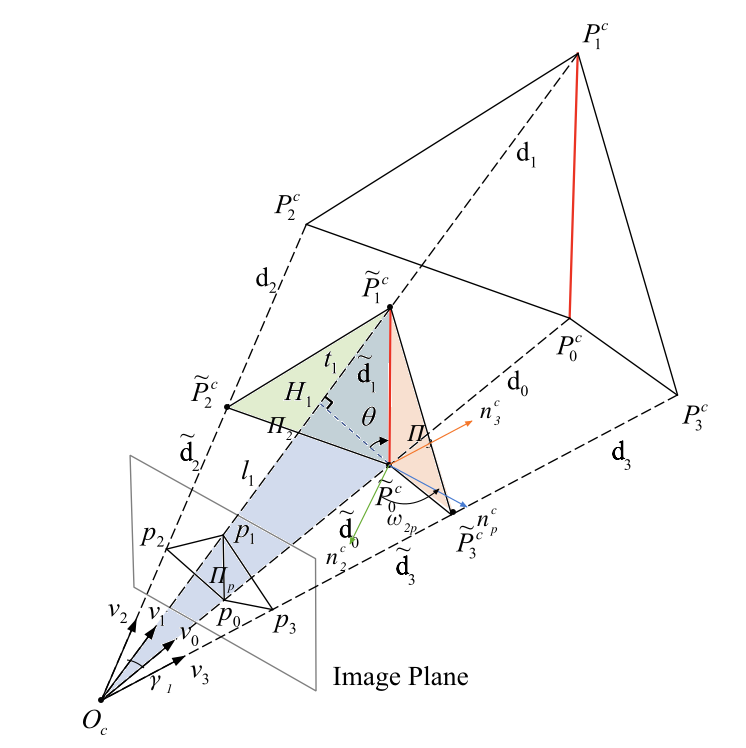

01 / Sample
Two matches, one shared edge
Sampling fewer matches makes an all-correct sample much more likely at high outlier rates. The remaining matches still contribute to solving the pose.
Perspective-n-point is a fundamental problem in multi-view geometry, yet two critical challenges persist: 1) The issues of high outlier rate and near degenerate cases exert a substantial impact on the robustness of existing PnP methods. In the worst-case where both issues are in presence, existing methods tend to either produce erroneous results or become computationally prohibitive. 2) Conventionally, the hypothetical pose with the maximum inlier-set is assumed to be correct. However, it remains unclear whether this assumption holds when the outlier rate approaches ultra-high levels, and along this line what is the maximum amount of outliers that can be robustly handled. To address these challenges, this paper proposes a novel Hough voting based 2-point RANSAC solution. To our knowledge, it is the first PnP solution capable of accurately and efficiently handling high outlier rates in near-degenerate cases. Extensive empirical evaluations have been conducted using the proposed approach, with a particular focus on a systematic examination under ultra-high outlier rates. The results show that, on random synthetic data, our approach works robustly even when dealing with up to 99% outliers. Meanwhile on real-world datasets, the maximum inlier-set assumption oftentimes fails when the outlier rate exceeds 97%, as the incorrect hypothetical poses may yield more inliers than the ground-truths.
Sampling fewer matches makes an all-correct sample much more likely at high outlier rates. The remaining matches still contribute to solving the pose.
Each remaining match forms a triangle with the shared edge. Perspective-similar-triangle constraints map its candidates into a common 2D voting space.
Retain significant voting peaks to explore ambiguous poses in near-degenerate scenes. Soft-weighted optimization refines candidates while reducing the influence of large residuals.
At 95% outliers, only 5% of matches are correct. A useful RANSAC sample needs every sampled match to be correct. Reducing the sample size changes those odds dramatically.
chance all are correct
chance all are correct
chance all are correct
At 95% outliers, an all-correct sample is approximately 20× more likely with two matches than with three, and 400× more likely than with four.
Using the independent-draw approximation: P(all correct) ≈ ws, with correct-match fraction w and sample size s; expected trials ≈ 1/ws. These averages are not success guarantees. Sampling odds do not directly equal runtime speedups: each trial also has a computational cost.
How can two matches recover a full pose? They define the shared edge; the remaining matches supply the constraints needed to recover the pose.
Interactive Figure 1. Follow a shared edge and its triangles into the voting space, then inspect pose refinement. When the two anchor matches are correct, other correct matches tend to support a common peak. Near-degenerate configurations can produce several significant peaks; the algorithm retains these alternatives for refinement and comparison.
Fewer points per RANSAC sample make high-outlier estimation practical. The plots below separate the revised synthetic benchmark from the paper's real-image evidence.
Revised C++ benchmark: three scene configurations, seven outlier rates, and ten trials per setting. “Accurate” means rotation error < 5° and relative translation error < 10%; timing is full Python-call wall time.
Most existing methods fail above 90% outliers. RPnP++ remains accurate up to 97% across all three scenes.
Across 80–95% outliers, RPnP++ gains 0–80 percentage points over the best competing method. At 95%, the gain is 10–80 points.
Across the paired 5–95% range, RPnP++ reaches up to 800× speedup while preserving comparable or better pose accuracy.
The cards above summarize the revised C++ synthetic benchmark below. The speedup is the maximum observed against the compared solvers at comparable or better accuracy; it is not the sampling-probability ratio.


Takeaway. Above 90% outlier rate, most existing methods fail to produce usable poses, while RPnP++ remains accurate up to 97% across all three scene configurations.
Original paper experiments: MATLAB implementation on the wide-baseline image-matching dataset (1,000 image pairs). These results are separate from the revised C++ synthetic benchmark above.





On the real-image benchmark, RPnP++ delivers the best accuracy among the compared methods. Compared with RSC(RP4P)+OGN, which is the most accurate competing method, RPnP++ is approximately 100× faster.
Selected qualitative results from the paper's real-image and AR evaluations.


Two matches anchor the geometry. Every other match adds a triangle that can support—or disagree with—the same camera pose.

The sampled matches define the red edge . Each other match adds a triangle, as illustrated by and .
From camera center , image point gives direction , but the distance to is unknown. The triangle’s known shape helps constrain these depths.
The shaded triangles share the smaller red edge . Their control points lie on the same rays as ; the tilde marks the scaled construction.
A small triangle must match its corresponding large triangle in shape: equal angles and proportional sides. This PST constraint identifies geometrically consistent candidates.
describes the smaller red edge’s direction in its projection plane. measures rotation around that edge from (green normal arrow) to (blue normal arrow).
Each triangle votes for valid candidates in this two-angle space. With correct anchors, correct matches tend to form common peaks. Keep significant peaks, refine their poses with soft weights, and select the pose with the most inlier support.
@article{xu2025hough,
title = {A Hough Voting-Based 2-Point {RANSAC} Solution to the
Perspective-n-Point Problem},
author = {Xu, Chi and Guo, Tingrui and Huang, Yuan and Cheng, Li},
journal = {IEEE Transactions on Image Processing},
volume = {34},
pages = {6838--6851},
year = {2025},
doi = {10.1109/TIP.2025.3622336}
}